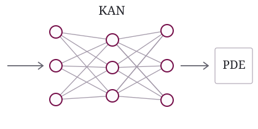
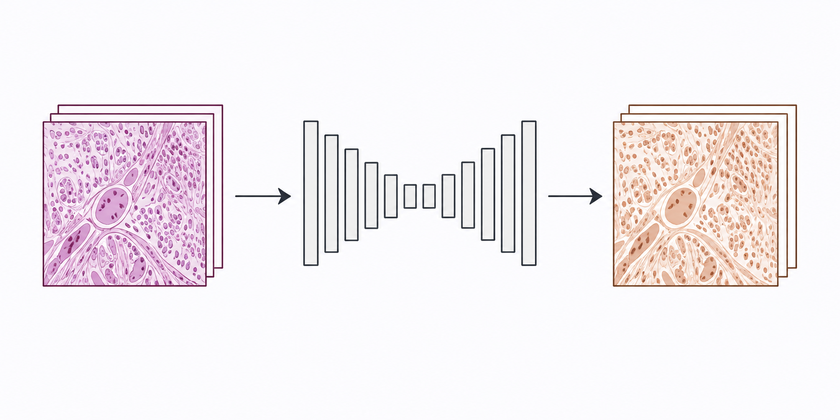
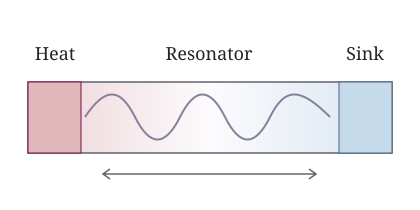

Computational Pathology
Research project
Pathology-based cancer survival prediction
Exploring pathology image representations for predicting cancer survival outcomes.
Role: First author of an unpublished research manuscript
Physics undergraduate · Nankai University
AI research internships & collaboration
I study physics at Nankai University, with interests in multimodal learning, computational pathology and scientific machine learning.
B.S. in Physics · 2023–Present
Nankai University
School of Physics
Expected graduation: 2028
Top 14.5% under the major-course calculation.
Research project
Exploring pathology image representations for predicting cancer survival outcomes.
Role: First author of an unpublished research manuscript
Collaborative research
Studying ovarian cancer survival outcomes using pathology images, clinical information and reports.
Role: Co-first author of a manuscript in preparation
Sep 2025 – Jan 2026
Contributed code and selected report sections to a course group project on neural approaches to the hydrogen-atom Schrödinger equation. Worked with Kolmogorov–Arnold networks and physics-informed optimization, comparing numerical solutions with analytical references.
Methods: Course group project · KAN · Scientific machine learning

c. Nov 2024 – Jun 2025
Led a completed undergraduate innovation project using a public paired-image dataset. Carried out conditional-GAN experiments and parameter-efficient adaptation of a pretrained image-generation model; completed the main implementation, image-similarity evaluation and final defense.
Methods: Conditional GANs · LoRA · PSNR / SSIM / LPIPS

Physics modeling & experiment
Contributed to mechanism analysis, simulation and parameter studies using COMSOL and DeltaEC. The project received a National First Prize in the 10th National Undergraduate Physics Experiment Innovation Competition (2024).
Methods: COMSOL · DeltaEC · Experimental design
Co-inventor of a granted Chinese utility model patent: Phase-Change Thermoacoustic Engine Experimental Device, ZL 2025 2 0478687.3.

Linear Algebra (A); Software Foundations and Computational Physics (A); Theoretical Mechanics (A); Programming Fundamentals (A−).
Python, C/C++, PyTorch, NumPy, pandas; Linux, Git, Conda and LaTeX. Experience with multimodal learning, generative modeling, physics-informed learning, cross-validation and ablation studies.
Interested in AI research internships and research collaboration. Please get in touch by email or GitHub.